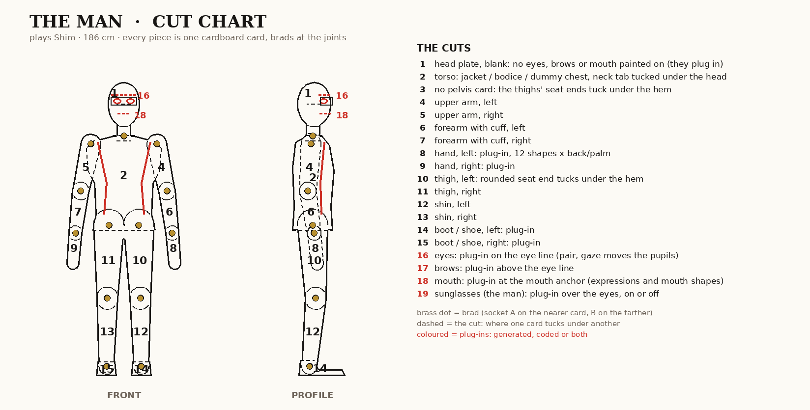
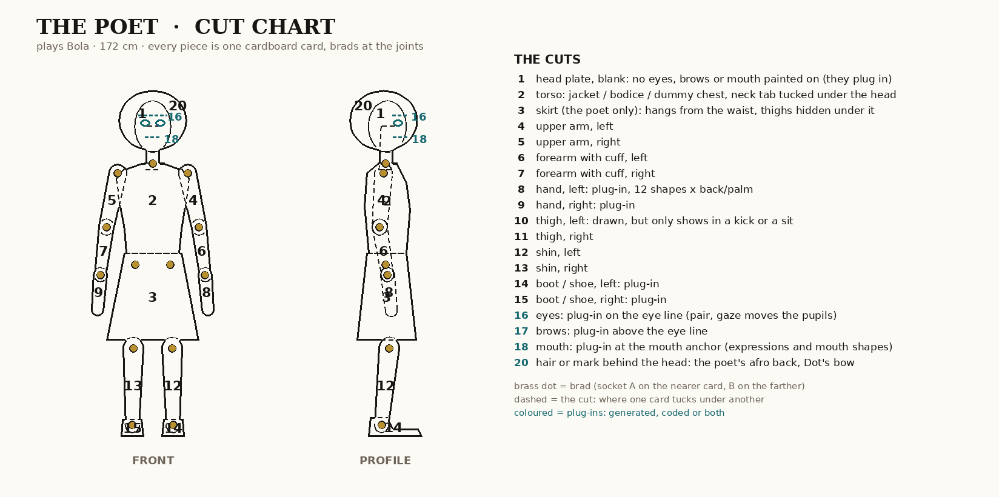
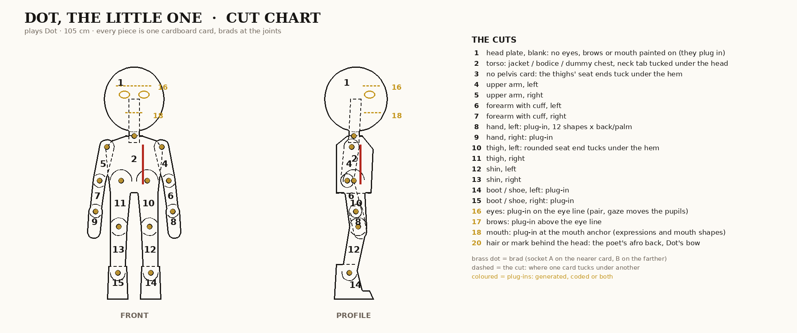
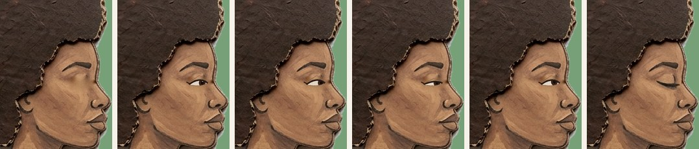
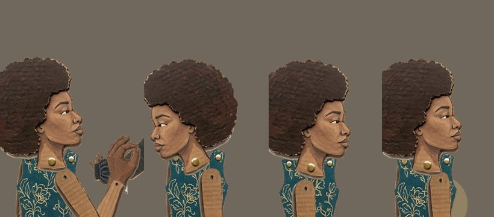
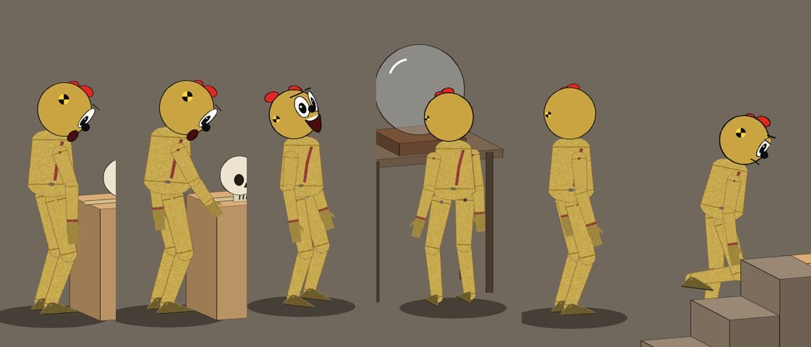
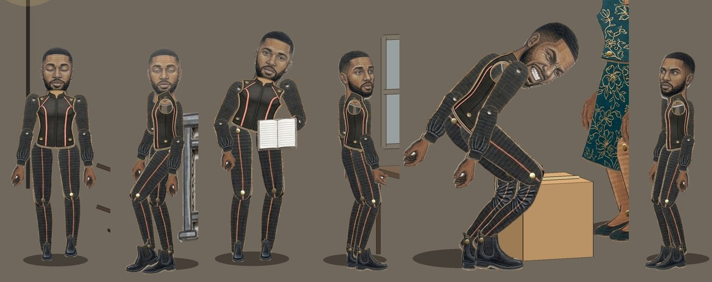

Every part becomes a plug: a hand, an eye, a mouth, a boot, a whole head. A part can be generated (a painted card from an image model), coded (drawn by the rig from the motion bank) or a fusion of both (a painted plate with coded features riding on it). Anything that fits a slot's sockets can replace anything else in that slot.
The old parts were made the other way round: a model painted a card, then we guessed where its brads were, and the guesses were off by up to 30 pixels. Here the skeleton comes first. The cut charts, the templates and the socket registry are all drawn from one rest skeleton per character, so the brads are placed before anything is painted.
Thirty sheets, ten per character. For each: open the image and save it, copy the prompt, and give the generator just those two. The image carries everything in three panels: A the layout to paint into (brads already placed), B who the character is, C cut-out style references from our own cardboard sheets.
One rest pose per character (the man 186 cm, the poet 172, Dot 105): every joint, every card's width.
The body cut into numbered cards like a butcher's chart. Each sheet is a template at one scale, with every brad already on a cross.
An image model, or an artist, paints each card inside its ghost, from the prompt and the references. Nothing is detected afterwards.
The registry says where each socket is in the sheet. The rig pins A on the joint, scales by centimetres and plugs features onto their anchors.
One outline per view. A dashed line is a cut, where one card tucks under the next; a brass dot is a brad. The coloured marks are the face plug-ins. The man has no pelvis card: his trouser thighs end in a rounded seat that tucks under the jacket hem, as the critics asked. The poet's skirt is her only hip card.



Each slot takes any part with its sockets. These rows show what can fill each slot today and what the generation runs add.
| Slot | Sockets | Generated | Coded | Fusion |
|---|---|---|---|---|
| Head plate | neck crown + eyes brows mouth anchors | painted blank plate, five views | Dot's round head | the poet's plate with a coded eye |
| Eyes | centred on eyes | painted pairs: open, wide, half, closed, squint, happy, sad, side glance | whites, iris, gaze and lids from the bank | painted whites, coded pupils that follow gaze |
| Brows | centred on brows | rest, raised, knit, sad, one up, angry | a stroke turned by the bank's brow angle | painted brow, turned and lifted by code |
| Mouth | centred on mouth | rest, smile, grin, O, A, E, U, M/B/P, F/V, frown, strain, wavy | line, O, open, teeth, wavy from the bank | painted shape chosen by code, opened by the bank's open |
| Glasses | on eyes | the man's sunglasses, front and profile | – | on or off per beat |
| Hand | eyelet A on the wrist, B on the knuckles | 12 shapes × back and palm, right hand (the left is its mirror) | Bolas glove port | painted hand closed around a coded prop grip |
| Foot | ankle, toe, heel | flat, heel up, toe up, front, back, 3/4 | – | – |
| Body cards | A/B per limb; the torso carries shoulders and hips | front, 3/4, back and profile sheets | – | – |
| Replacement | one brad at the hip | sit, kneel, lie, crouch, fall | – | head and hands plug onto it |

Her only head had its eyes painted shut, so every critic said she looked asleep. The eye is painted out to make a plate. A coded eye in her style plugs in, with gaze and lids from the bank, and her own painted closed eye stays as the closed state.

The same head in four takes, mirrored whichever way she faces.

Dot's head is drawn the way Bolas draws it: eyes, brows and mouth from the bank, crash targets and her bow. In profile the face turns a little toward camera so it still reads.

The hands are cut from his hand sheets, each on its eyelet tab. The legs come from his segmented leg sheet. These are the generated parts Kit 3 makes properly, from templates instead of found sheets.
The Crash Lab bank already carries a face on every frame. Each field maps onto a plug-in, so a painted set and a coded set answer to the same data.
| Bank field | Values | What it changes |
|---|---|---|
eyes | o, closed, heart | which eye card (or coded eye) is on; heart becomes a coded overlay |
lid | 0 to 1 | coded upper lid over any open eye; past 0.85 the closed card |
gx, gy | -1 to 1 | coded pupils move inside the painted whites |
brow | -1 to 1 | picks rest / raised / knit / sad, then turns it by the angle |
mouth | line, O, teeth, wavy | picks the mouth family |
smile, open | -1 to 1, 0 to 1 | picks within the family (smile, frown, grin) and stretches it open |
effort | 0 to 1 | teeth with effort is strain, never a grin |
hand shape, palm | relaxed, flat, pinch, fist, grip, point …; in, out, up, down | which hand card, back or palm by which way the palm faces, the thumb side from the 3D hand |
kit3/registry.json is written by kit3/kit.py from the same skeleton that draws the templates. A card painted into a template keeps these sockets, in sheet pixels. A few entries: